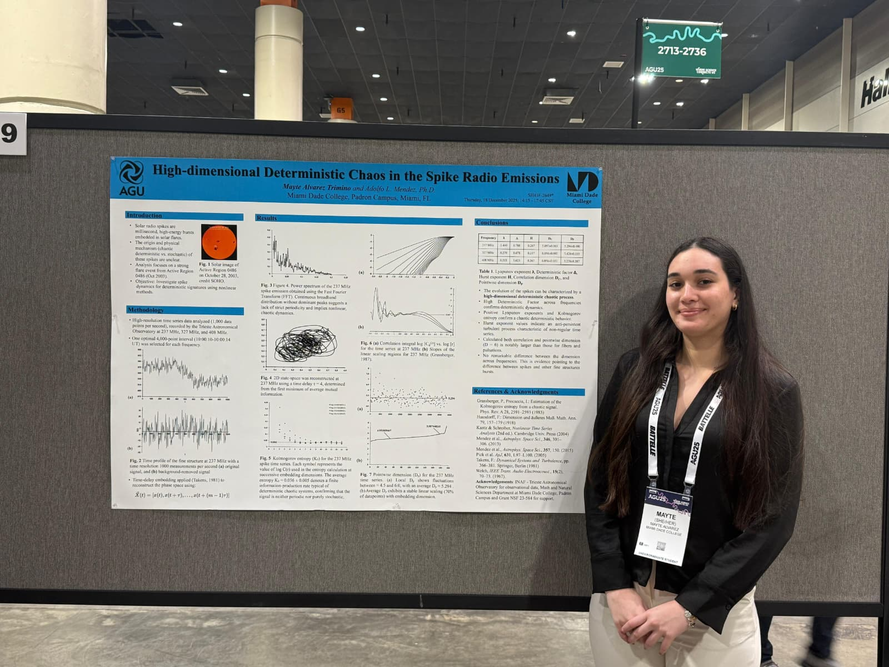

Nonlinear Dynamics and Deterministic Chaos in Solar Radio Burst Spikes
Under the mentorship of Professor Adolfo Mendez, Miami Dade College
Research Question
Can we identify and quantify deterministic chaotic behavior in solar radio burst spikes, and what does this reveal about the underlying plasma dynamics driving these phenomena?
Background & Motivation
Solar radio bursts are intense electromagnetic emissions from the Sun's corona, often associated with solar flares and coronal mass ejections. These bursts exhibit complex temporal structures, including rapid fluctuations known as "spikes" that occur on millisecond timescales.
Understanding whether these spikes arise from deterministic chaotic processes or stochastic noise has implications for space weather prediction and for understanding plasma turbulence in astrophysical contexts. Traditional linear analysis methods are insufficient for capturing the nonlinear dynamics inherent in these systems.
My Research Contributions
In this study, I led the application of nonlinear time-series analysis to high-resolution observational data of solar radio spike bursts. I developed and implemented a computational pipeline to reconstruct phase space, enabling us to probe the underlying dynamical system.
By calculating correlation dimension and applying statistical testing, I isolated signatures of deterministic chaotic dynamics from stochastic background noise. I also generated control datasets to verify that detected nonlinearities were intrinsic to plasma processes rather than instrumental artifacts.
Methodology
Takens Embedding
Reconstructing the phase space from time-series data using delay coordinates to reveal the underlying attractor geometry.
Correlation Dimension Analysis
Computing the correlation dimension to quantify the fractal structure of the reconstructed attractor and distinguish chaos from noise.
Nonlinear Time-Series Modeling
Applying techniques to characterize temporal dependencies and identify deterministic patterns in the data.
Research Poster
AGU poster on nonlinear dynamics and deterministic chaos in solar radio burst spikes

Key Findings
Our analysis revealed statistically significant evidence of high-dimensional deterministic chaos in solar radio burst spikes, with correlation dimensions consistently higher than those of other studied solar burst structures. This suggests that the observed temporal patterns are not purely stochastic but arise from underlying nonlinear dynamical processes.
The identified chaotic signatures provide insights into plasma instabilities and wave-particle interactions driving these emissions, offering a framework for understanding solar radio phenomena and potentially improving space weather forecasting capabilities.
Broader Impact & Future Directions
This research demonstrates the applicability of nonlinear dynamics techniques to astrophysical phenomena. The methodology can be extended to other complex systems exhibiting turbulent behavior.
Future work will explore mechanisms underlying the observed chaos, investigate relationships between chaotic dynamics and solar activity cycles, and develop predictive models for space weather applications. I also aim to apply these techniques to laboratory plasma experiments and fusion research contexts.